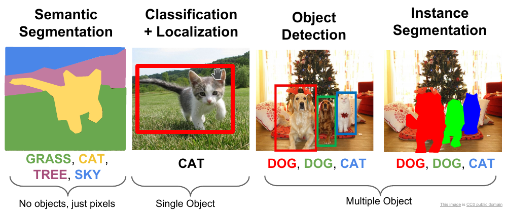
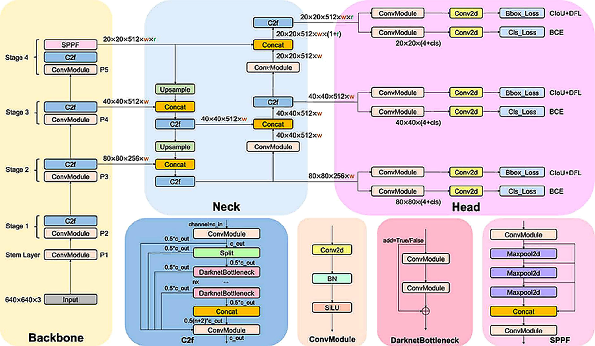
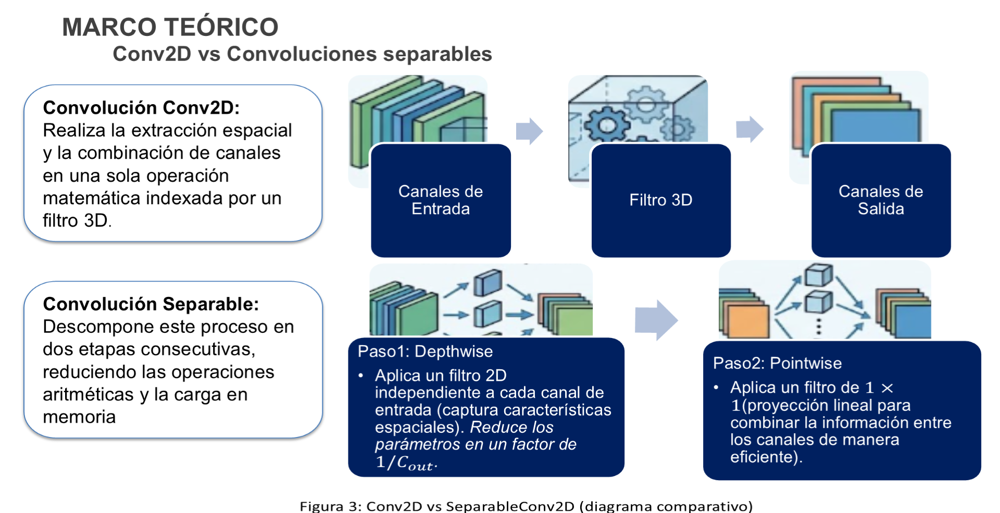
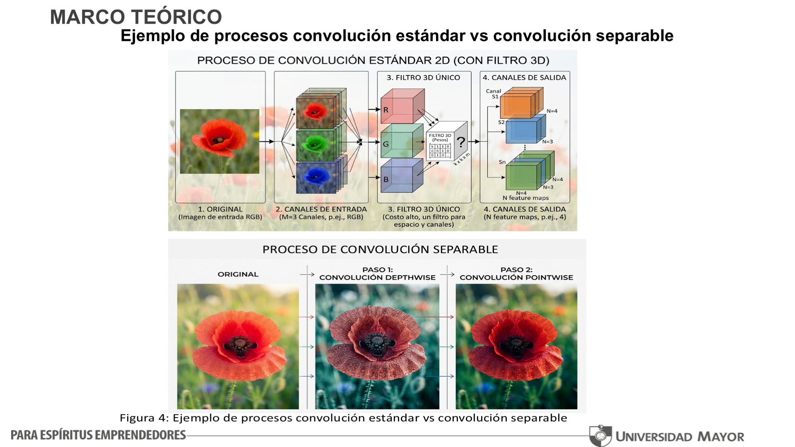
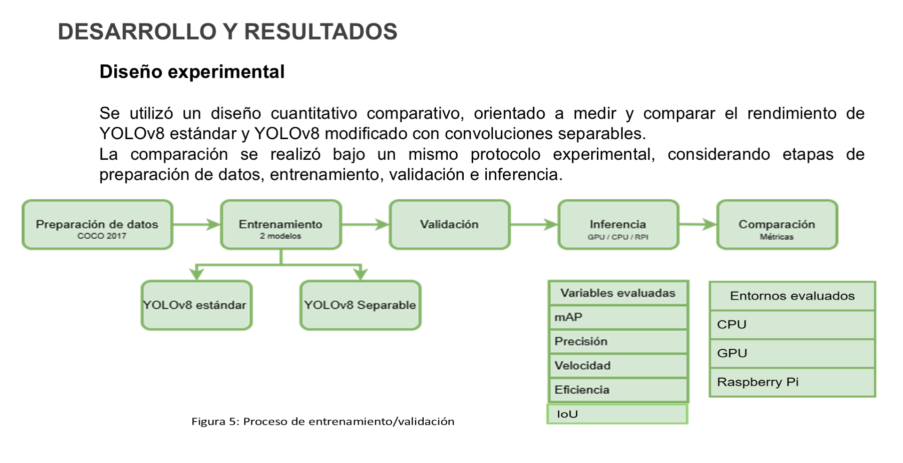
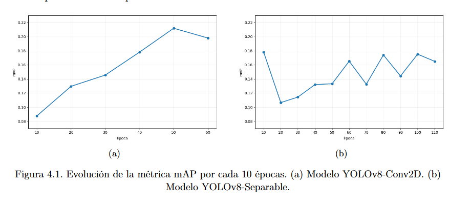
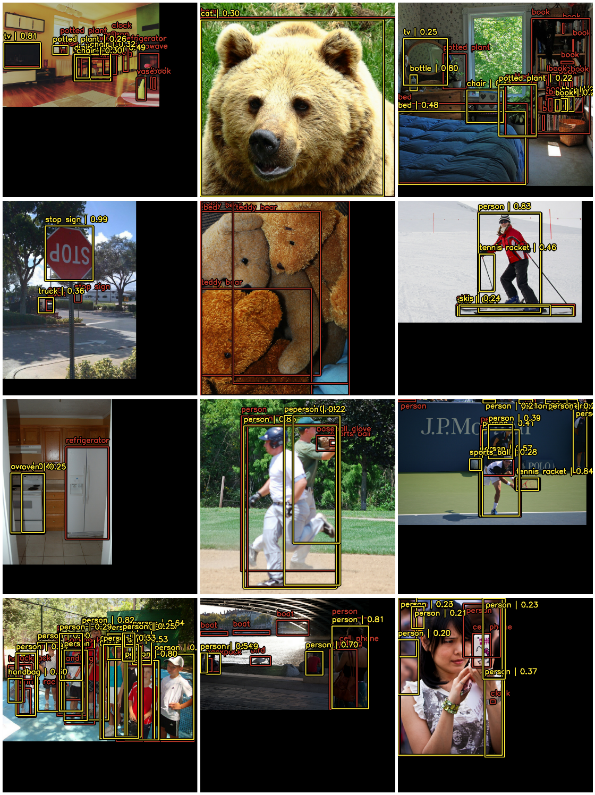
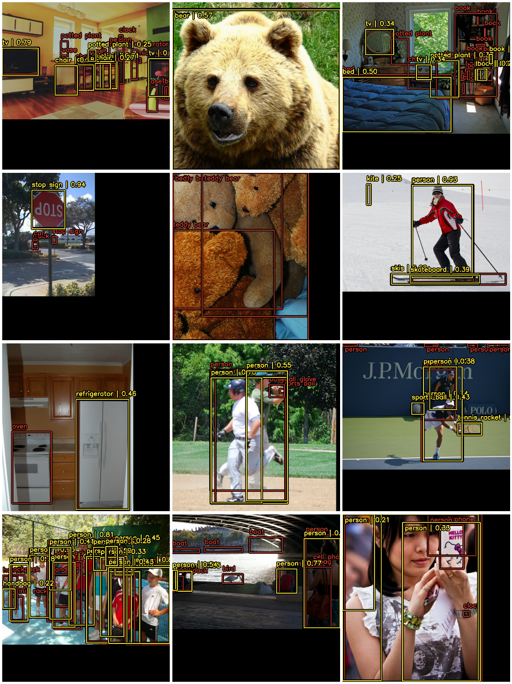
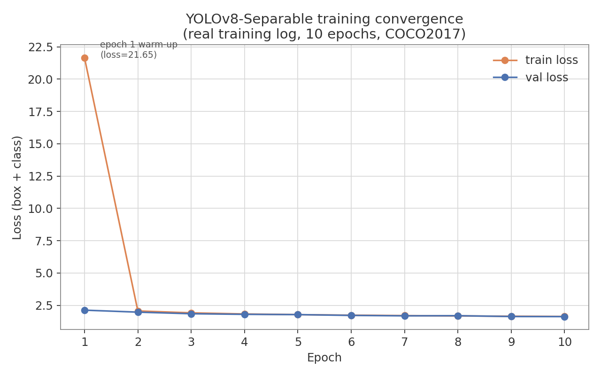

This page shows the project's results. The methodology, the design decisions and the limitations are documented in the repository's README.
1.2 Problem statement

<p align="center"><em>Figure 1: Object detection example (YOLO). Places object detection within the family of computer-vision tasks: semantic segmentation, classification + localization, object detection and instance segmentation.</em></p>
3.2 YOLOv8 architecture

<p align="center"><em>Figure 2: Standard YOLOv8 model as implemented (Terven et al., 2023). 640×640×3 input, four Backbone stages, multi-scale fusion in the Neck and three decoupled prediction branches in the Head.</em></p>
3.3 Conv2D vs. separable convolutions

<p align="center"><em>Figure 3: Conv2D vs SeparableConv2D (comparative diagram).</em></p>

<p align="center"><em>Figure 4: Example of standard vs. separable convolution processes. Above, the single 3D filter sweeping space and channels simultaneously; below, the decomposition into per-channel filtering (depthwise) followed by cross-channel combination (pointwise).</em></p>
4.1 Research design

<p align="center"><em>Figure 5: Training / validation process.</em></p>
5.3 Performance evolution: mAP every 10 epochs

<p align="center"><em>Figure 6: Evolution of the mAP metric every 10 epochs. (a) YOLOv8-Conv2D model. (b) YOLOv8-Separable model.</em></p>
5.4 Validation results per model

<p align="center"><em>Figure 7: Detection with YOLOv8-Conv2D trained for 50 epochs. Ground-truth boxes in red, model predictions in yellow, over COCO2017 validation images.</em></p>

<p align="center"><em>Figure 8: Detection with YOLOv8-Separable trained for 100 epochs. Same visualization protocol and same validation images as Figure 7, for direct comparison.</em></p>
5.7 Visualizations derived from the results

This curve is not a summary statistic: it is the epoch-by-epoch box_loss / class_loss / val_loss sequence saved in the output cell of 02_yolov8_separable_conv.ipynb itself (Epoch 1/10 … Epoch 10/10), included so the reported metrics can be audited against the raw training log and not only against the final numbers.